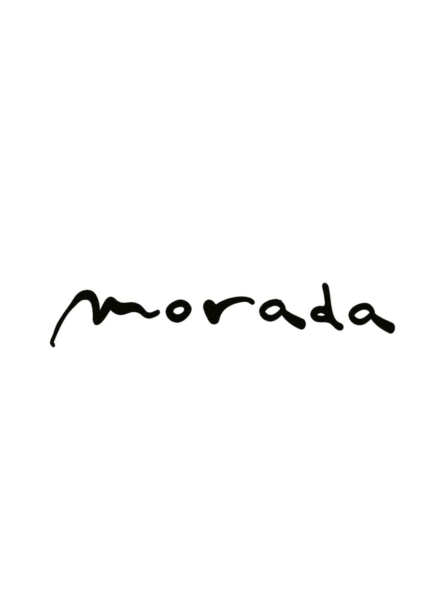
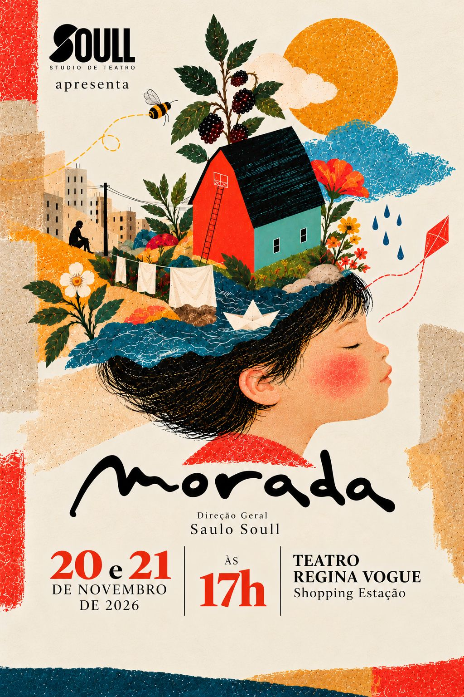

QUINTA-FEIRA · 2026
9h às 12h
Todo o elenco que se apresenta na
sexta-feira, 20 de novembro.
SOULL STUDIO DE TEATRO APRESENTA

TEMPORADA 2026Aquilo que ainda
mora em nós.
20 e 21 de novembro às 17h
Teatro Regina Vogue · Shopping Estação · Curitiba
Consulte sua apresentação e seu ensaio geral.
Cada turma tem uma história. Encontre a sua.

02 / ANTES DE ABRIR AS CORTINAS
O ensaio geral é fundamental para que cada artista descubra o palco com segurança e confiança.
QUINTA-FEIRA · 2026
Todo o elenco que se apresenta na
sexta-feira, 20 de novembro.
SEXTA-FEIRA · 2026
Todo o elenco que se apresenta no
sábado, 21 de novembro.
Atenção, Corpo, Sonhos e Rua: vocês participam dos dois espetáculos e dos dois ensaios gerais, em 19 e 20 de novembro, das 9h às 12h.
O ensaio geral é fundamental! É quando nossos artistas se ambientam com o palco, cenografia, iluminação, sonoplastia, entradas, saídas e movimentações, com segurança e confiança. A presença de cada criança é muito importante. As datas e os horários não podem ser alterados: dependem da disponibilidade do teatro, da equipe técnica e da programação de produção.
A PROGRAMAÇÃO COMPLETA
Dois espetáculos às 17h.
Confira quem ocupa o palco em cada dia.
03 / UM LUGAR NA PLATEIA
Dois dias, duas apresentações e elencos diferentes. Selecione a data correta antes de adquirir seu ingresso.
Atenção à data do ingresso
Algumas turmas participam apenas da sexta-feira ou apenas do sábado. As turmas MORADA DO CORPO, MORADA DOS SONHOS e MORADA DA RUA, do COLÉGIO MEDIANEIRA, participam dos dois dias: 20 e 21/11. Confira a data de apresentação da sua turma antes de comprar.
Cada aluno tem direito a 2 ingressos gratuitos para pais ou responsáveis. O link para retirar as cortesias será enviado na semana do espetáculo.
Os links da Sympla são exclusivos para ingressos pagos. A retirada das cortesias terá um link separado.
Vendas: ingressos pagos disponíveis na Sympla.
04 / PARA VIVER ESSE DIA COM TRANQUILIDADE
Tudo o que as famílias precisam saber, da chegada ao último aplauso.
Chegada dos artistas: 15h nos dois dias. Exceção: Dom Bosco · CEI, sábado, 21/11, às 15h30. Espetáculos às 17h.
A equipe Soull recebe as crianças no hall de entrada do teatro e as encaminha aos bastidores. Durante a preparação, pais e responsáveis não entram no teatro ou nos camarins, preservando a surpresa. O público entra no momento destinado à plateia.
Após o espetáculo, as crianças serão entregues por ordem de turmas, chamadas pela equipe. Aguardem as orientações.
Figurinos assinados por Natalie Fronzack. A figurinista e a equipe vestirão os alunos no teatro, durante a preparação. Não é preciso colocar o figurino em casa.
Após a última apresentação de cada aluno, o figurino passa a pertencer a ele. As três turmas dos dois espetáculos devem preservá-lo para sábado.
Cano alto, médio ou baixo. All Star ou modelo similar de outra marca. Qualquer cor.
Ilustrações de referência para os tipos de cano.
A caracterização oficial é de Izis Rodrigues e equipe, parceiras do Soull há anos, no teatro, no dia da apresentação.
Serviço opcional e recomendado, contratado e pago à parte, diretamente com a profissional.
Falar com Izis no WhatsApp ↗Penteados simples e maquiagem expressiva, contemporânea e poética. Diferentes tons de pele e texturas de cabelo, com espaço para cada criança ser quem é.
Estudos ilustrados de inspiração, não obrigação. As referências fotográficas poderão ser acrescentadas posteriormente.
O lanche da parceira Jauense Confeitaria está incluído no pacote artístico: salgados, docinhos, sucos e refrigerantes. Em caso de alergia, intolerância ou restrição alimentar, a família deve enviar uma refeição adequada no dia.
Fotografia e filmagem profissional: Lays Gasperin e Diego Gasperin — Sinergize. Os links para baixar as fotos serão encaminhados às famílias após os espetáculos, quando a fotógrafa entregar o material.
As famílias também podem fotografar e filmar, sem prejudicar o público e os artistas. Ao compartilhar, marquem @soullstudiodeteatro.
Pedimos ao público que chegue com antecedência. Não há tolerância prevista para atrasos de espectadores. Alterações no início acontecerão somente por necessidades técnicas ou operacionais da produção. Vamos respeitar o momento das crianças e dos demais espectadores.
CONFIRMAÇÃO DE LEITURA
Preencha os dados abaixo para registrar sua ciência das orientações do espetáculo.
05 / SOBRE O ESPETÁCULO
O que nos abriga além da casa?
MORADA investiga o que nos abriga além da casa física — corpo, sonhos, brincadeiras, memórias, rua, natureza e relações humanas. Um teatro para crianças que não subestima crianças.
A casa é uma imagem poética, não uma história única; objetos e espaços se transformam ao longo das cenas.
As palavras. As perguntas. Um engraxate. Uma banqueta e suas infinitas possibilidades. Um corpo que cresce, muda e carrega memórias. Uma pequena casa na Bahia e as histórias que ela me contou. Um sonho procurando um lugar para morar. As experiências dos espaços. As brincadeiras que não cabem nos bolsos. As canções, suas rimas e suas não-rimas. As crianças e as perguntas que elas fazem ao mundo. Aquilo que escolhemos carregar enquanto atravessamos a vida. A morada.
06 / QUEM FAZ ESSA MORADA
Colégio Medianeira · Colégio Dom Bosco · Colégio Assunção
Baggio Pizzeria e Focacceria · Confeitaria Jauense
Soull Studio de Teatro e Arts